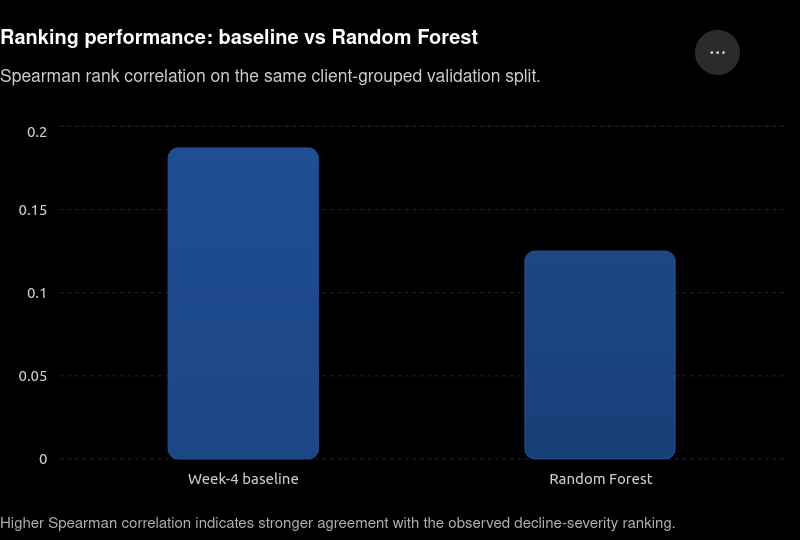

TABLE OF CONTENTS:
RANKING SIGNAL ANLAYSIS FOR CONTENT DECLINE PRIORITIZATION
HEMA PAVANI DONTULA
FLYRANK ML INTERNSHIP – RANKING SIGNAL ANALYSIS
This study asks whether available content and search-performance signals can provide useful directional information for identifying content items that show stronger observed decline signals. The analysis uses a public-safe anonymized content-performance dataset containing content, search, freshness, position, and CTR signals. A transparent Week-4 baseline is compared with a Random Forest regression model using a client-grouped 80/20 validation split to reduce cross-client leakage. On the validation split, the Week-4 baseline achieved a Spearman rank correlation of 0.186973, while the Random Forest achieved 0.124757, showing that the transparent baseline performed better for ranking agreement in this evaluation. The resulting analysis and action queue are intended as decision-support for prioritizing human editorial review, not as causal evidence or a prediction of any search-engine algorithm.
The decision supported by this analysis is which content items should receive earlier human review when available performance signals suggest stronger observed decline.The unit of analysis is an individual content item/page. The primary analytical output is a ranking signal for decline severity, supported by an action queue containing the observed signals associated with each recommended review item.
A FlyRank editor could use the output to prioritize which content items to inspect first rather than reviewing all items equally. The human reviewer can then investigate freshness, search position, CTR, content characteristics, and other contextual factors before deciding whether an update or further analysis is appropriate.
The cost of a wrong call is asymmetric: prioritizing a healthy page wastes editorial time, while overlooking a genuinely declining page can delay an appropriate content review. Data and ML can help by providing a consistent way to rank many content items using the available signals, while keeping the final decision with a human.
This is a directional ranking and prioritization problem. It does not attempt to establish that any individual feature causes a decline.
The analysis uses an anonymized content-performance dataset containing content, search, freshness, position, CTR, and related performance signals.
The target was defined as: decline_severity = -trend_pct
Rows without a usable target were excluded from model training and validation.
The following fields were deliberately excluded from the model features:
trend_pct
trend_direction
is_declining_label
content_id
client_id
The first three fields are outcome- or label-derived and therefore create leakage if used as predictive features. In particular, is_declining_label is derived from trend information, while trend_direction and trend_pct directly encode the outcome being analyzed.
content_id and client_id are pseudonymous identifiers. They are used only for grouping, splitting, joining, or traceability where necessary, and are never used as model features. The validation split is grouped by client_id so that clients do not overlap between training and validation.
The analysis also avoids using client names, private search queries, or other client-identifying information. No client-identifying details are intentionally included in the work/ artifacts.
The first comparison point is a transparent Week-4 baseline based on three observable signals:
Whether content is at or beyond a training-derived stale-content threshold based on days_since_last_update.
Whether CTR is below the training-derived median CTR for its position_tier.
Whether the content belongs to the top_3 or page_1 position tiers.
The score assigns weights of 2, 2, and 1 respectively:
baseline_score = 2 × stale_signal + 2 × low_ctr_signal + 1 × position_signal
The stale threshold and position-tier CTR medians are calculated using training data only, preventing validation information from influencing the baseline.
This is a fair comparison because the baseline and Random Forest are evaluated on the same client-grouped validation split using the same observed target.
The Week-4 baseline achieved a Spearman rank correlation of 0.186973 on the validation split.
The model is a Random Forest regression pipeline. It was selected as a practical non-linear model for the Ranking Signal Analysis lane because content-performance relationships may involve interactions and non-linear patterns between freshness, search position, competition, CTR, and content characteristics.
The
target is defined in one sentence as: decline
severity is represented by the negative of the observed trend_pct,
so larger values correspond directionally to stronger observed
decline.
The model features are:
search_volume
competition
competition_level
cpc
content_type
main_intent
word_count
char_count
content_age_days
age_tier_order
days_since_last_update
freshness_tier
word_count_tier
char_count_tier
position_tier
avg_position
ctr
Numeric features use median imputation. Categorical features use most-frequent imputation followed by one-hot encoding with unknown categories ignored.
The
Random Forest uses 200 trees with random_state=42.
The analysis deliberately leaves out trend-derived fields and pseudonymous identifiers to reduce leakage and prevent the model from learning identity rather than useful content-performance signals.
The dataset was divided using an 80/20 split
grouped by client_id. This prevents
records from the same client appearing in both training and
validation and provides a more conservative estimate of
generalization to unseen clients.
Both the baseline and Random Forest were evaluated on the same validation split.
Method |
Spearman rank correlation |
|---|---|
Week-4 baseline |
0.186973 |
Random Forest |
0.124757 |
RESULTS CHART:
The following chart compares the Spearman rank correlation of the Week-4baseline and Random Forest on the same client-grouped validation split.The baseline achieved the higher ranking correlation in this evaluation.

The Random Forest also produced a validation MAE of 103.341395 for the decline-severity target.
The key observed result is that the transparent Week-4 baseline achieved stronger ranking agreement than the Random Forest on this validation split. The model therefore should not be presented as an improvement over the baseline.
This negative result is important: the available features and chosen Random Forest configuration did not produce a stronger ranking signal than the simpler rule-based approach under this evaluation setup.
The Random Forest analysis indicates that content age and search-position-related variables were among the strongest signals in the fitted model, with competition, CPC, content length, CTR, and search volume also contributing to the learned predictions.
The result also provides an important methodological finding. Although the Random Forest can represent more complex relationships than the Week-4 rule-based baseline, greater model complexity did not translate into better validation ranking performance here. The baseline's Spearman correlation of 0.186973 exceeded the Random Forest's 0.124757.
This means the simpler rule-based signal should remain an important reference point rather than assuming that a more complex model is automatically better.
The analysis does not establish causality. For example, a relationship between content age and observed decline does not prove that age itself caused the decline. The observed patterns should instead be treated as signals for further human investigation.
The recommended workflow is to use the generated action queue as a human-review prioritization tool, rather than as an automatic decision system.
A FlyRank editor could use the queue tomorrow as follows:
Start with content items receiving stronger observed decline signals.
Review freshness and time since the last update.
Inspect CTR relative to the relevant position tier.
Consider the item's search position and content characteristics.
Investigate the page manually before deciding whether an update or further analysis is justified.
Record the editorial decision and use later observations to evaluate whether the prioritization approach remains useful.
The action queue provides reason codes such as high decline signal, stale content, low CTR, and high position so that recommendations remain interpretable.
Confidence should be considered directional rather than predictive. The Random Forest did not outperform the simpler baseline on the validation ranking metric, so the current evidence supports using the analysis as a prioritization aid rather than relying on the model as an authoritative ranking system.
The recommendations should not be interpreted as causal prescriptions or as predictions of Google's or another search engine's ranking algorithm.
The analysis uses Python and standard data-science tooling including pandas, NumPy, SciPy, and scikit-learn.
The main computational artifact is:
work/notebooks/capstone.ipynb
The notebook contains the dataset loading, grouped split, leakage audit, preprocessing, model training, baseline construction, evaluation, recommendation generation, and ML-12 closing material.
The primary generated artifacts are:
work/outputs/model_vs_baseline.csv
work/outputs/content_action_queue.csv
The main random seed is:
random_state = 42
The validation split uses GroupShuffleSplit with an 80/20 validation fraction and random_state=42, grouping by client_id.
To reproduce the analysis from the repository, open the capstone notebook in a Python/Colab environment with the required Python data-science dependencies installed and run the notebook from top to bottom. The final outputs should be regenerated rather than relying on manually copied metric values.
The evaluation uses a client-grouped validation split rather than claiming a sealed or blind holdout evaluation.
Built on the FlyRank ML Internship dataset. Flyrank.ai